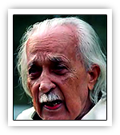

|

|
| ಜನನ |
10 ಅಕ್ಟೋಬರ್ 1902, ಕೋಟ, ಉಡುಪಿ ಜಿಲ್ಲೆ
|
| ವೃತ್ತಿ |
ಪ್ರಮುಖ ಪಾತ್ರಗಳು
ಕಾದಂಬರಿಕಾರ, ನಾಟಕಕಾರ, ಸಂಶೋಧಕ, ಚಿಂತಕ
- ಕನ್ನಡ ಸಾಹಿತ್ಯದ “ಬಹುಮುಖ ಪ್ರತಿಭೆ” ಎಂದು ಕರೆಯಲ್ಪಡುವ ಮಹಾನ್ ಪ್ರತಿಭೆ
- ಸಾಹಿತ್ಯ, ವಿಜ್ಞಾನ, ಸಂಸ್ಕೃತಿ, ಪರಿಸರ — ಎಲ್ಲ ಕ್ಷೇತ್ರಗಳಲ್ಲೂ ಅಪಾರ ಕೊಡುಗೆ
- ಮಕ್ಕಳ ಸಾಹಿತ್ಯ, ಜನಪದ ಅಧ್ಯಯನ ಮತ್ತು ಸಂಶೋಧನೆ ಕ್ಷೇತ್ರಗಳಲ್ಲಿ ಮುಖ್ಯ ಪಯಣ
- ನವೋದಯ ಸಾಹಿತ್ಯ ಚಳವಳಿಯ ಪ್ರಮುಖ ವ್ಯಕ್ತಿ
|
| ಪ್ರಶಸ್ತಿ |
ಗೌರವಗಳು ಮತ್ತು ಪ್ರಶಸ್ತಿಗಳು
ಜ್ಞಾನಪೀಠ ಪ್ರಶಸ್ತಿ (1977) — ಸಮಗ್ರ ಸಾಹಿತ್ಯ ಸೇವೆಗೆ
- ಪದ್ಮಭೂಷಣ ಪ್ರಶಸ್ತಿ
- ಪದ್ಮಶ್ರೀ
- ಕೇಂದ್ರ ಸಾಹಿತ್ಯ ಅಕಾಡೆಮಿ ಪ್ರಶಸ್ತಿ
- ಕರ್ನಾಟಕ ರಾಜ್ಯೋತ್ಸವ ಪ್ರಶಸ್ತಿ
- ಮಕ್ಕಳ ಸಾಹಿತ್ಯ ಮತ್ತು ವಿಜ್ಞಾನ ಕೃತಿಗಳಿಗೆ ಹಲವು ರಾಷ್ಟ್ರೀಯ ಪ್ರಶಸ್ತಿಗಳು
|
| ಮರಣ |
ಅಂತ್ಯ ಮತ್ತು ಪರಂಪರೆ
9 ಡಿಸೆಂಬರ್ 1997, ಮಾಣಿಪಾಲ
- ಕನ್ನಡ ಸಾಹಿತ್ಯ ಕಳೆದುಕೊಂಡ ಅಪಾರ ಸೃಜನಶೀಲ ಪ್ರತಿಭೆ
- ಸಾಹಿತ್ಯ–ಸಂಶೋಧನಾ ಲೋಕಕ್ಕೆ ಶಾಶ್ವತ ಕೊಡುಗೆ
- ಪರಿಸರ ಜಾಗೃತಿಗೆ ಮತ್ತು ಸಂಸ್ಕೃತಿ ಸಂರಕ್ಷಣೆಗೆ ಜೀವಮಾನ ಸೇವೆ
- ಉಡುಪಿ–ಕೋಟ ಪ್ರದೇಶದಲ್ಲಿ ಕಾರಂತ್ ಮೆಮೊರಿಯಲ್ ಸ್ಥಾಪನೆ
|
| ಸಂಕ್ಷಿಪ್ತ ವಿವರಣೆ |
ಸಾರಾಂಶ (ಸಾಹಿತ್ಯ ಮತ್ತು ಶೈಲಿ)
ಕನ್ನಡ ಸಾಹಿತ್ಯದ ಬಹುಮುಖ ಪ್ರತಿಭೆ — ಡಾ. ಶಿವರಾಮ ಕಾರಂತ್:
- ಕಾದಂಬರಿ, ನಾಟಕ, ಪ್ರಬಂಧ, ಮಕ್ಕಳ ಸಾಹಿತ್ಯ — ಎಲ್ಲದಲ್ಲೂ ವಿಶಿಷ್ಟ ಕೊಡುಗೆ
- ಪರಿಸರ, ಸಂಸ್ಕೃತಿ ಮತ್ತು ಮಾನವೀಯ ಮೌಲ್ಯಗಳು ಇವರ ಬರಹದ ಮುಖ್ಯ ಆಧಾರ
- ನಾಟಕ, ನೃತ್ಯನಾಟಕ ಮತ್ತು ಚಲನಚಿತ್ರಗಳಲ್ಲೂ ನವೀನ ಪ್ರಯೋಗಗಳು
ಪ್ರಮುಖ ಕೃತಿಗಳು
- ಮೂಕಜ್ಜಿಯ ಕನಸುಗಳು
- ಮರಳಿ ಮನ್ನಿಗೆ
- ಬಾಳಿಗ
- ಚೊಮನಾ ದುಡಿ
- ನೋಳಿ ಮುಳ್ಳದ ಹೇಗುರು
ಪ್ರಭಾವ ಮತ್ತು ಕೊಡುಗೆ
- ನವೋದಯ ಚಳವಳಿಗೆ ಬಲ ತುಂಬಿದ ಸಾಹಿತ್ಯದ ಶಿಲ್ಪಿ
- ಕನ್ನಡ ವೈಜ್ಞಾನಿಕ ಬರವಣಿಗೆಯ ಪಿತಾಮಹ
- ಮಕ್ಕಳ ಸಾಹಿತ್ಯದ ಜನಪ್ರಿಯ ಗುರುತು
- ಭಾಷಾ–ಸಂಸ್ಕೃತಿ ಅಧ್ಯಯನಕ್ಕೆ ನವೀನ ದೃಷ್ಟಿ ನೀಡಿದವರು
|